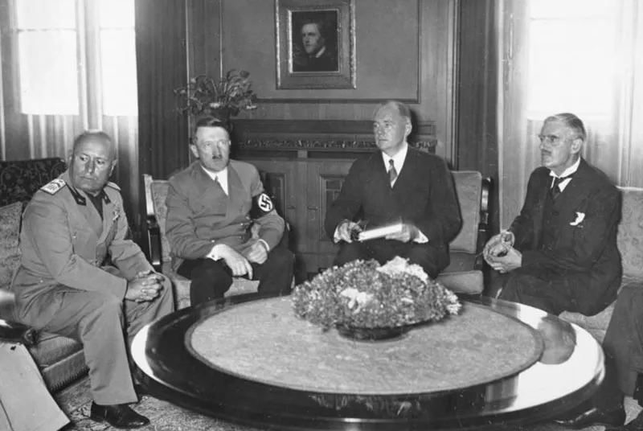

Causas a Largo Plazo
Dailey y Webb (2012) afirman que Poderes aliados comúnmente referidos como los Aliados durante la Segunda Guerra Mundial, este grupo primero consistió de Polonia, Francia, Gran Bretaña y otros, como la URSS y Estados Unidos se unió en 1941. El 1 de septiembre de 1939, Alemania invadió Polonia. Dos días después, Gran Bretaña y Francia, formando lo que se conoció como las Potencias Aliadas, expandió el conflicto declarando la guerra a Alemania. Las causas de esta guerra son el tema de debate continuo y vigoroso. Muchos historiadores simplemente han culpado a Alemania y a su líder, Adolf Hitler, como los instigadores del conflicto, y algunos de estos han descrito incorrectamente la Segunda Guerra Mundial en Europa como "la guerra de Hitler". Otros historiadores han visto la Segunda Guerra Mundial en Europa como una continuación de la Primera Guerra Mundial y algunos lo declaran como un evento inevitable que resultó de acciones iniciadas en la Europa del siglo XIX tales como la búsqueda de recursos industriales y espacio para poblaciones en expansión. Esta sección analiza las causas a largo plazo de la guerra.
Tratado de Versalles
El Tratado de Versalles impuso condiciones severas a Alemania, como reparaciones económicas, reducción del ejército, pérdida de territorios y restricciones diplomáticas. Estas medidas generaron resentimiento y una profunda crisis económica, que avivaron tensiones en Europa y sembraron las bases para el conflicto.
Como afirma Cartwright, el Tratado de Versalles, firmado en junio de 1919, fue un acuerdo entre los vencedores de la Primera Guerra Mundial (1914-18) que de nuevo dividía Europa e impuso restauraciones, limitación de armamento, y la culpa absoluta hacia Alemania de la guerra, uno de los perdedores del conflicto. Si bien estaba diseñado para garantizar una paz duradera, anular los puntos más severos del tratado se convirtió en el objetivo de los próximos cancilleres alemanes y del siguiente líder nazi Adolf Hitler (1889-1945) durante los años 30. En efecto, el rencor hacia el tratado fue una de las razones para el incremento del socialismo nacional, y, en definitiva, una de las causas de la Segunda Guerra Mundial (2024).
Los puntos principales del Tratado de Versalles incluían:
- Alemania debía aceptar la responsabilidad absoluta por la Primera Guerra Mundial,
- Alemania tenía que pagar indemnizaciones a Francia, Gran Bretaña y Bélgica,
- se devolvieron las regiones de Alsacia y Lorena a Francia,
- a Alemania le quitaron el control del Sarre, una zona carbonífera,
- se le entregó a Polonia la región industrial de Alta Silesia y un tramo hacia el mar Báltico,
- Alemania perdió el control sobre Danzig (Gdansk),
- Alemania perdió todas sus colonias,
- Renania fue desmilitarizada,
- el Ejército alemán se recortó a un límite de 100.000 hombres,
- Alemania no podía construir tanques, aviones, submarinos o buques de guerra,
- se creó la Liga de las Naciones, un nuevo cuerpo internacional de coorperación.
Problemas económicos de posguerra
Después de la Primera Guerra Mundial, Alemania enfrentó una grave crisis económica, marcada por la hiperinflación y una deuda masiva. La ocupación del Valle del Ruhr en 1923 por Francia y Bélgica exacerbó la situación, llevando a un descontento generalizado que fue aprovechado por movimientos extremistas.
En 1921, la cantidad total de reparaciones que Alemania debía pagar se estableció en 132 mil millones de marcos de oro. Esta cantidad debía pagarse durante 42 años. Para 1922, Alemania solicitó una suspensión de pagos ya que el gobierno afirmó que no podía hacerlos. Esto fue rechazado por Francia y cuando el pago falló en 1923, Francia y Bélgica ocuparon el industrializado Valle del Ruhr de Alemania. Por varias razones, esto condujo a un período de hiperinflación en Alemania, cuando el gobierno imprimió grandes cantidades de papel sin valor mientras Asignatura de Historia NS Quinto Grado. El costo de vida aumentó dramáticamente. Las negociaciones condujeron a la retirada de las fuerzas francesas y belgas en 1924 y una reorganización de la deuda de guerra de Alemania, que incluía enormes préstamos de los Estados Unidos, ayudando a economía para recuperarse rápidamente. Las reparaciones fueron vistas por el pueblo alemán como la raíz de todos sus problemas económicos durante la década de 1920, una creencia que el gobierno alemán alentó incluso cuando esto no era cierto. La inseguridad económica, la inestabilidad política y otras dificultades nacionales se atribuyeron a la necesidad de continuar suministrando fondos a Francia y Bélgica. También sirvieron para recordar constantemente a los alemanes su derrota en la Primera Guerra Mundial y la paz dictada que siguió, lo que provocó que algunos pidieran venganza(Dailey y Webb, 2012).
La Gran Depresión
La crisis económica mundial de 1929 golpeó duramente a Alemania, aumentando el desempleo y debilitando aún más su economía. Esto facilitó el ascenso de Adolf Hitler y del Partido Nazi, quienes prometieron restaurar la grandeza de Alemania y revertir los términos del Tratado de Versalles.
Estados Unidos era la economía más grande del mundo en 1929 cuando su mercado de valores comenzó un declive precipitado, desencadenando la Gran Depresión. Como el valor de las acciones se desplomaron, las personas no pudieron pagar los préstamos bancarios que habían tomado para invertir más en los mercados. Bancos estadounidenses retiraron préstamos a Alemania después de 1924, arrastrando hacia abajo la economía alemana, que dependía de la inversión estadounidense y las compras de bienes manufacturados. Sin consumo estadounidense e inversión, Gran Bretaña, Francia, Japón e Italia pronto se unieron a Alemania en una gran recesión económica. El desempleo aumentó rápidamente a medida que las fábricas cerraron y los bancos colapsaron. La mayoría de los países crearon barreras comerciales al gravar fuertemente importaciones para proteger sus propias industrias. Gran Bretaña y Francia recurrieron a sus imperios para el comercio, mientras que Japón buscó el imperio. Todos los países sufrieron desempleo y muchos países crearon gobiernos multipartidistas, o coaliciones, para administrar su estado durante la crisis. Las condiciones en Alemania fueron severas en 1933 con desempleo oficial en seis millones, aproximadamente el 25 por ciento de los trabajadores. Los diversos gobiernos alemanes entre 1930 y 1933, intentando gobernar sin mayorías parlamentarias en un país muy políticamente dividido, no pudieron abordar de manera efectiva la situación económica (Dailey y Webb, 2012).
Causas a Corto Plazo
Dailey y Webb (2012) mencionan que después de que el partido nazi llegó al poder en Alemania, la diplomacia internacional continuó dominado por Gran Bretaña y Francia, a menudo a través de la Liga de las naciones. Sin embargo, cada vez más, Alemania se volvió más asertiva a medida que su La economía se recuperó de los peores efectos de la Gran Depresión, permitiendo una política exterior más agresiva y exitosa.
Rearme alemán
Hitler violó el Tratado de Versalles al reconstruir el ejército alemán, reintroduciendo el servicio militar obligatorio y produciendo armamento a gran escala. Este rearme permitió a Alemania adoptar una política exterior más agresiva y desafiar abiertamente las potencias aliadas.
Alemania fue desarmada después de la Primera Guerra Mundial como un primer paso hacia el desarme general en Europa. Esto ciertamente fue discutido en la Liga de Naciones que pedía la reducción de los armamentos de los estados miembros. Después de muchos años de investigación e informes, la Conferencia Mundial de Desarme se reunió en Ginebra, Suiza, en 1932. Francia tenía el ejército permanente más grande de Europa con 340,000 hombres en 1932 y 700,000 más en reservas. Los aliados de Francia incluyeron Polonia, Checoslovaquia y Rumania, todos con fuerzas sustanciales. Aunque Alemania solo tenía 100.000 soldados según lo estipulado en el Tratado de Versalles, todos creían que la población alemana, más del doble que la de Francia, más su capacidad industrial significaba que en un breve período de tiempo podría reconstituir sus fuerzas armadas y amenazan la seguridad francesa. Francia se negó a cooperar con el desarme hasta que Gran Bretaña y EE. UU. Acordaron garantizar su seguridad a través de una alianza; ambos países se negaron. Alemania declaró que, si Francia no limitaría su ejército, se vería obligado a armarse para defenderse; luego se retiró de la conferencia y luego la Liga de las Naciones poco después. Sin embargo, la condición económica de Alemania impidió medidas significativas de rearme hasta 1935 (Dailey y Webb, 2012).
Tabla de detalles del Rearme alemán:
| Aspecto | Descripción |
|---|---|
| Violación del Tratado de Versalles | Hitler reconstruyó el ejército alemán, introdujo el servicio militar obligatorio y produjo armamento a gran escala. |
| Desarme de Alemania | Tras la Primera Guerra Mundial, Alemania quedó desarmada como paso hacia el desarme general en Europa. |
| Conferencia Mundial de Desarme | En 1932, se reunieron en Ginebra, pero Francia se negó a limitar su ejército, lo que llevó a Alemania a retirarse de la conferencia. |
| Capacidad Militar de Francia | Francia tenía el ejército más grande de Europa con 340,000 soldados y 700,000 en reservas, lo que amenazaba la seguridad alemana. |
| Impacto del Rearme | La condición económica de Alemania y la política exterior agresiva llevaron a que se ignoraran las medidas significativas de desarme hasta 1935. |
El Pacto de Múnich
En 1938, los Sudetes fueron cedidos a Alemania tras el Acuerdo de Múnich, en un intento por apaciguar a Hitler. Sin embargo, esto solo fortaleció su determinación de expandir el territorio alemán, llevando a la invasión de Checoslovaquia en 1939.
A fines de 1938, los alemanes que vivían en los Sudetes de Checoslovaquia, que fueron discriminados por su gobierno, exigieron la anexión a Alemania. Gran Bretaña y Francia, que querían evitar la guerra, aprovecharon lo que vieron como la solicitud lógica de los alemanes que querían el derecho a vivir en Alemania; otras nacionalidades recibieron este derecho en la Conferencia de Paz de París. En el Acuerdo de Munich, Gran Bretaña, Francia, Italia y Alemania acordaron que los Sudetes debería otorgarse a Alemania y se entendió, pero no por escrito, que Alemania respetaría la integridad territorial del resto de Checoslovaquia (Dailey y Webb, 2012).
Pacto Nazi-Soviético
En agosto de 1939, Alemania y la URSS firmaron un pacto de no agresión, que incluía la división de Polonia entre ambos países. Este acuerdo permitió a Hitler invadir Polonia sin temor a represalias soviéticas, marcando el inicio de la Segunda Guerra Mundial.
Mientras tanto, Alemania inició conversaciones con la URSS. Estas conversaciones esencialmente exigían que Alemania y la URSS no pelearan entre sí mientras permitían que Alemania hiciera lo que quisiera diplomáticamente, y de lo contrario, con las partes de Europa que no habían pertenecido al antiguo Imperio ruso, que los soviéticos esperaban reclamar en el futuro cercano. Otras partes del acuerdo dejaron en claro que las partes de Polonia que una vez pertenecieron a Rusia ahora deben ser reabsorbidas en la URSS. Este documento, el Tratado de No Agresión entre Alemania y la URSS, comúnmente conocido como el Pacto Nazi-Soviético, fue anunciado el 23 de agosto de 1939, una semana antes de que Alemania declarara la guerra a Polonia el 1 de septiembre (Dailey y Webb, 2012).
Multimedia
Escucha un podcast explicativo sobre las causas del conflicto: